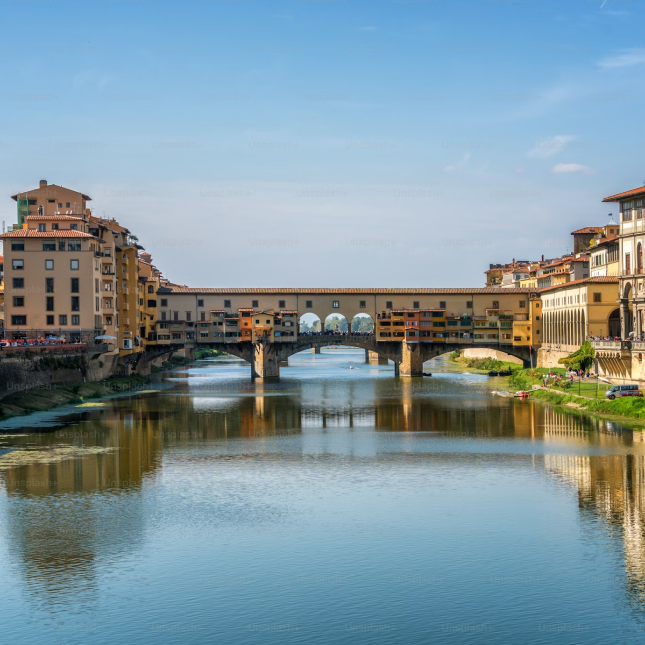
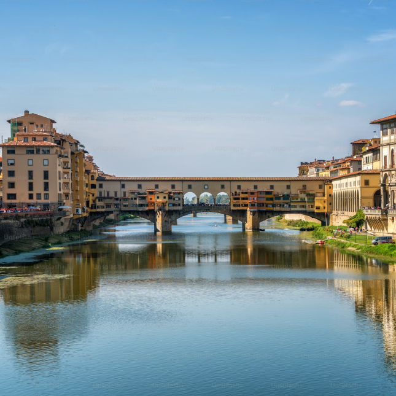
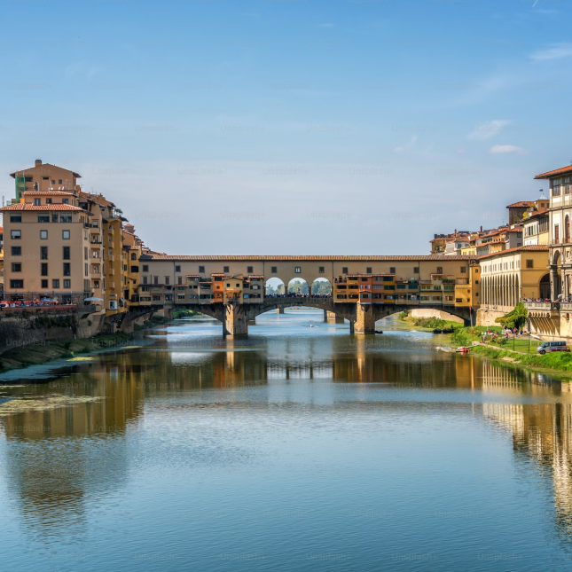

Lover of travel, culture and gastronomy. üåç‚úàÔ∏è
Here I share the stories recorded in each click, exploring
fascinating corners of our planet. From Rio de Janeiro, Brazil,
to the world. üèôÔ∏èüì∏
